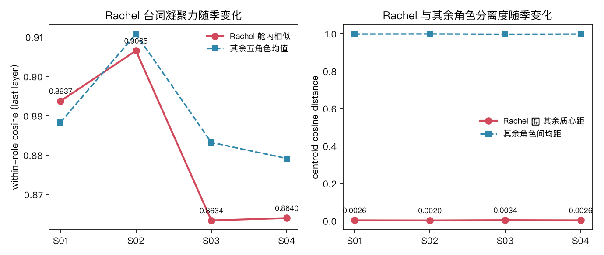
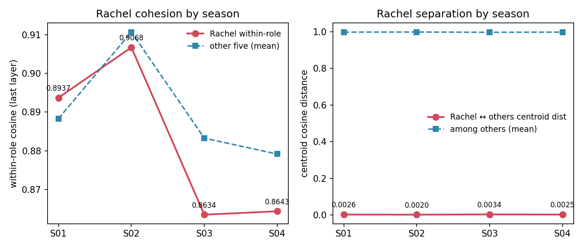
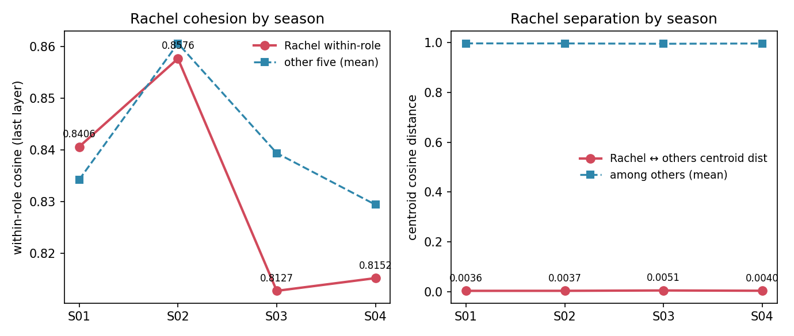
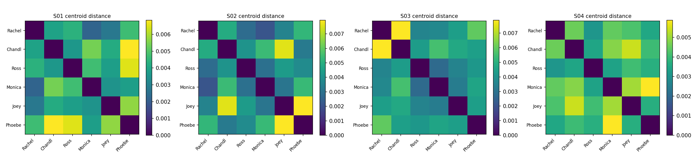
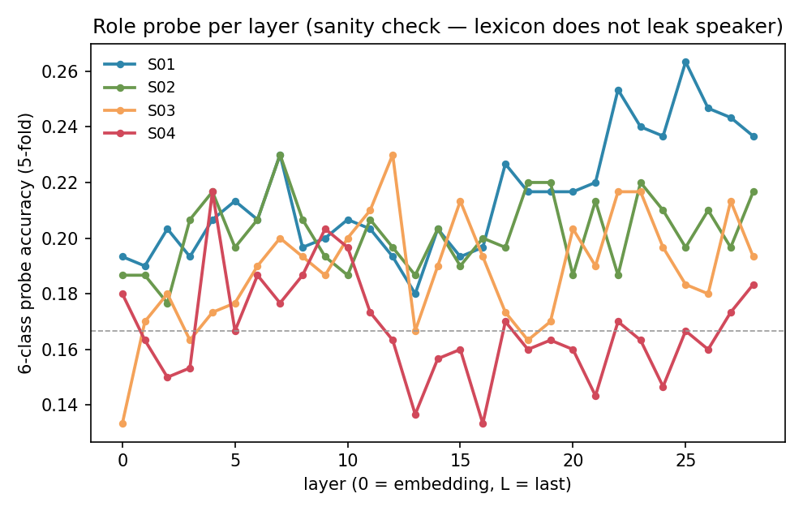
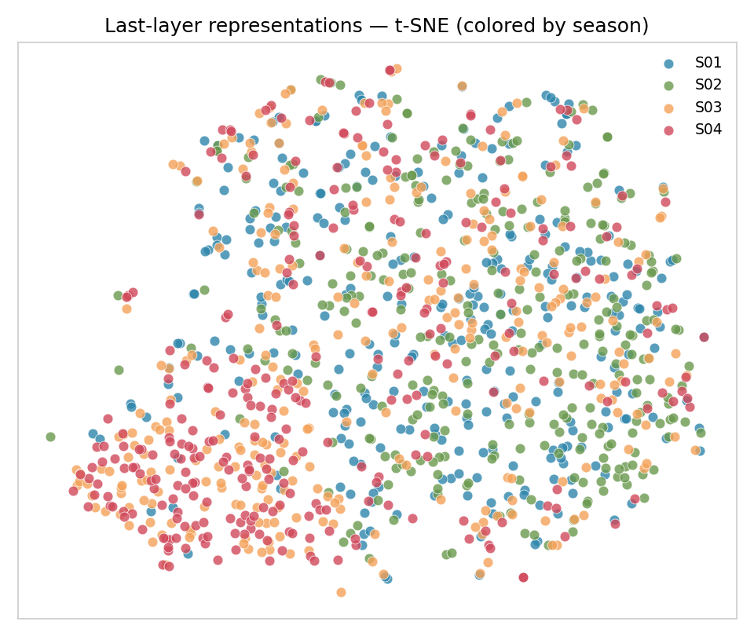
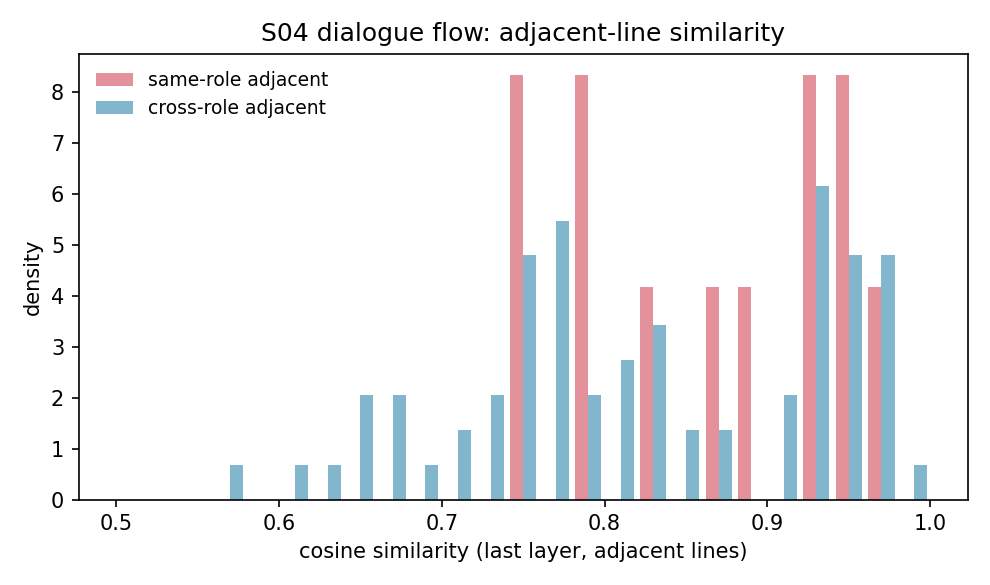

Friends 季节演化（S01–S04 · 双平台夜航）：Rachel 的特色是否在 S03/S04 才凝聚？
实验台:
benches/transformer_vis/· 夜航 PREREG:kaggle/PREREG.md（判据先冻）· 战报:kaggle/战报-friends-seasonal-kaggle-2026-10-13.md正本声明（三样交付律）: 正本＝friends_seasonal.py+corpus_friends_s1234.json+friends_s1234_raw.json+ 本地metrics_friends_s1234.json；投影＝Kaggle 两臂run.py（kaggle/make_arms.py由run_template.py生成，语料 gz+b64 内嵌，sha256 对正本解压字节逐位同源）；verify＝python3 kaggle/verify_friends_kaggle.py <kaggle_metrics.json>（退出码即判据） 语料: Friends S01–S04 六主角台词（来源 fangj.github.io/friends），每季每角色 50 条系统抽样，共 1,200 条（S02 已补齐——fangj 站该季为整集单块格式，解析器已兼容） 模型: 本地 Qwen2.5-0.5B（bf16-on-disk · MPS）∥ Kaggle 0.5B（bf16，自检臂）∥ Kaggle 7B（bnb-4bit, compute fp16, bnb 0.50.2）· attn eager 主人观感: 「到了第三季和第四季, Rachel 才表现出特色」 假设: H-S1 Rachel 舱内相似度 S03/S04 > S01 · H-S2 Rachel 质心距 S03/S04 > S01 · H-S3 对照（其余五角色随季同形 = 季间漂移，非 Rachel 特异）
读数
Rachel 时间线（末层）· 三臂并置：
| 季 | Rachel 舱内（本地 0.5B / Kaggle 0.5B / Kaggle 7B） | 其余五角色均值 | Rachel 质心距 | Rachel-vs-rest 探针 |
|---|---|---|---|---|
| S01 | 0.8937 / 0.8937 / 0.8406 | 0.8883 / 0.8883 / 0.8342 | 0.00257 / 0.00258 / 0.0036 | 0.757 / 0.760 / 0.793 |
| S02 | 0.9065 / 0.9068 / 0.8576 | 0.9108 / 0.9107 / 0.8606 | 0.00202 / 0.00202 / 0.0037 | 0.767 / 0.763 / 0.783 |
| S03 | 0.8634 / 0.8634 / 0.8127 | 0.8832 / 0.8833 / 0.8394 | 0.00341 / 0.00341 / 0.0051 | 0.777 / 0.773 / 0.813 |
| S04 | 0.8640 / 0.8643 / 0.8152 | 0.8791 / 0.8791 / 0.8294 | 0.00255 / 0.00255 / 0.0040 | 0.787 / 0.790 / 0.780 |
0.5B 两臂逐项对表全在冻结容差内（K-1 通过，见下）；7B 为 4bit，绝对值低一档属量化偏差，只比形态不比绝对值（K-4）。



每季六角色舱内相似（末层）· 7B 臂：
| 季 | Rachel | Chandler | Ross | Monica | Joey | Phoebe |
|---|---|---|---|---|---|---|
| S01 | 0.8406 | 0.8514 | 0.8139 | 0.8316 | 0.8372 | 0.8369 |
| S02 | 0.8576 | 0.8588 | 0.8675 | 0.8557 | 0.8585 | 0.8624 |
| S03 | 0.8127 | 0.8604 | 0.8296 | 0.8353 | 0.8563 | 0.8153 |
| S04 | 0.8152 | 0.8067 | 0.8215 | 0.8193 | 0.8454 | 0.8540 |
对照 H-S3（Δ vs S01，7B 臂）：
| 季 | ΔRachel 舱内 | Δ其余舱内 | 判定 |
|---|---|---|---|
| S02 | +0.0170 | +0.0263 | 同形 → 季间漂移 |
| S03 | −0.0279 | +0.0051 | 异形 → Rachel 特异 |
| S04 | −0.0254 | −0.0048 | 异形（降幅 5×）→ Rachel 特异 |
探针：Rachel-vs-rest 二类 7B 臂 S03 达峰 0.813（S01 0.793）；6 类探针 7B 0.217–0.263 / 本地 0.217–0.230，均近 6 类随机基线 0.167——台词词汇不暴露说话人。



对话流（S04 开头，86 句 / 1,471 token；两臂计数逐位相同）：
| 臂 | 同角色相邻 | 跨角色相邻 | 差 |
|---|---|---|---|
| 本地 / Kaggle 0.5B | 0.9129 / 0.9134（n=12） | 0.9081 / 0.9077（n=73） | 0.005 |
| Kaggle 7B（4bit） | 0.8669（n=12） | 0.8251（n=73） | 0.042 |

判词
- K-1 平台迁移成立：Kaggle 0.5B 臂 45 项指标全在冻结容差内（余弦 max |Δ| 3.4e-4 / 探针 3.3e-3 / 流计数逐位相等）——本地 MPS 单点读数为真，跨平台可复现。
- 主人的观感在词表征中未获支持——方向相反（0.5B 与 7B 一致）：Rachel 舱内相似度 S03/S04 下降（7B：0.8406 → 0.8127 → 0.8152），H-S1 不成立；质心距 H-S2 只在 S03 成立（+42%），S04 回落——观感的「S03/S04」实为「S03 单季」。
- 但 Rachel 确在 S03/S04 走成异类（对照 H-S3 异形）：S03 其余角色舱内均值微升（+0.005）时 Rachel 独降（−0.028）。半只脚落地：Rachel 的「特色」是真实的，只是形态为「更发散」而非「更凝聚」——S03/S04 的 Rachel 台词彼此更不相似。
- 7B 的对话流读出更强的同角色聚集（相邻同角色 vs 跨角色差 0.042，0.5B 仅 0.005）：大容量下「谁在跟谁说话」的局部结构更清楚，但这是流结构，不改变时间线判词。
- 人类观感 ≠ 词表征：主人的「特色」感知来自叙事层（角色弧光、表演、情境），词层面表征不承载这些信息——这本身就是读数：角色特色是叙事现象，不是词汇现象。
夜航故障两连（均已解，留痕于战报）
- Kaggle 源 1MB 上限（首射 400）：语料内嵌改 gz+b64（2.84MB → 0.63MB），sha256 仍对正本解压字节。
- bnb 缺失 + 断网（二射 ImportError；三射 pip 解析失败）：7B 臂 metadata 单独开 internet 装 bnb 0.50.2（偏离 PREREG 的 enable_internet=false，模板注记登记）；bf16 退路未用。
诚实账
- 7B 为 bnb-4bit：与 bf16 的绝对偏差不可归零（K-4 不裁决）；本地无 7B bf16 基线，跨模型只比形态。
- 每季每角色 50 条系统抽样；台词长度/话题多样性影响相似度；流同角色相邻 n=12，统计力弱。
- 「特色」的操作化（舱内相似度 + 质心距）只是一种量化；人类感知的角色特色可能对应别的表征维度（情绪极性、句法复杂度、叙事位置）。
- 6 类探针近随机 = 台词词汇不暴露说话人（同 S01 实验纪律）。
复现
cd benches/transformer_vis
/opt/miniconda3/envs/default/bin/python friends_extract.py 1 2 3 4 # 抓 S01-S04
/opt/miniconda3/envs/default/bin/python make_corpus_friends.py 1 2 3 4 # 抽样 1200 条
/opt/miniconda3/envs/default/bin/python friends_seasonal.py # 本地 0.5B 正本实验
python3 kaggle/make_arms.py # 生成两臂 run.py（gz+b64 内嵌+对撞）
/opt/miniconda3/envs/default/bin/kaggle kernels push -p kaggle/friends-seasonal-0-5b # 自检臂
/opt/miniconda3/envs/default/bin/kaggle kernels push -p kaggle/friends-seasonal-7b # 7B 臂
python3 kaggle/verify_friends_kaggle.py kaggle/out-0-5b/metrics_friends_s1234_kaggle.json # K-1（退出码即判据）
/Users/mac/Applications/quarto/bin/quarto render report_friends_s1234_kaggle.qmd --to html旋钮（正本 friends_seasonal.py 旋钮区逐条列出）：SEED=13 / TSNE_PERPLEXITY=15 / PROBE_FOLDS=5 / FLOW_MAX_TOKENS=1500 / LEAD=Rachel。